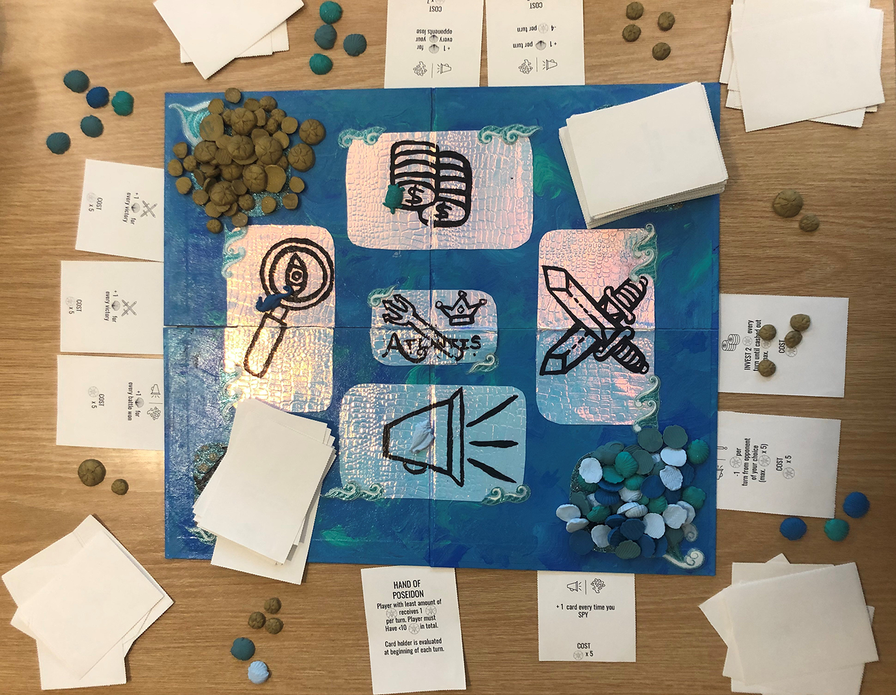
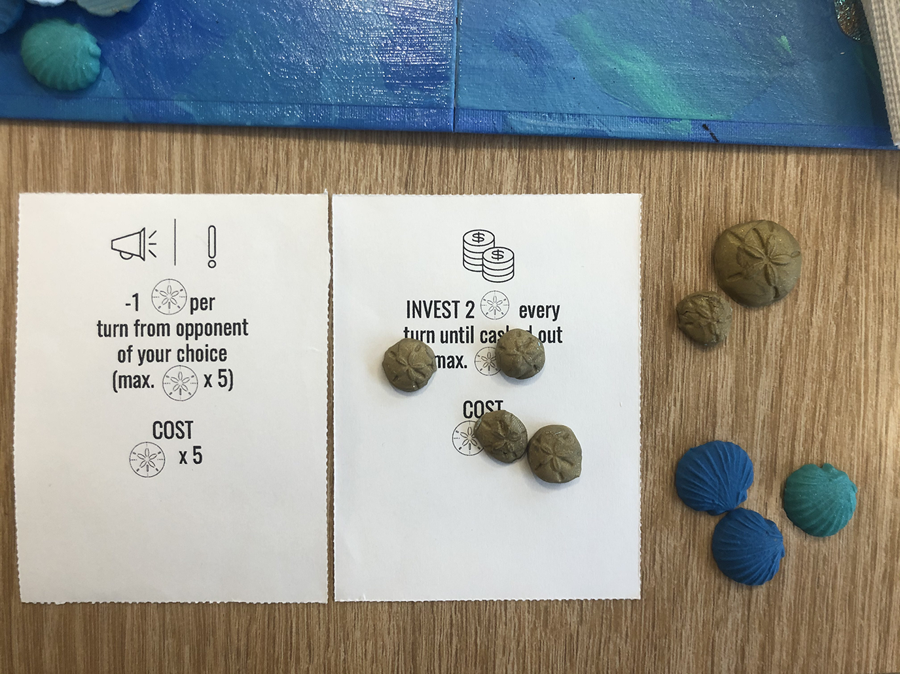

Everyone knows the queen of your fair city is about to kick off this mortal coil. The question is, which one of her relatives will she choose to take the throne? Vie for the favor of the queen and the people in this card-based strategy and resource management game and crown yourself ruler of Atlantis in "Atlantis: City of Scoundrels". Make engines, sabotage your opponents, and gain influence to win. 2-4 players.